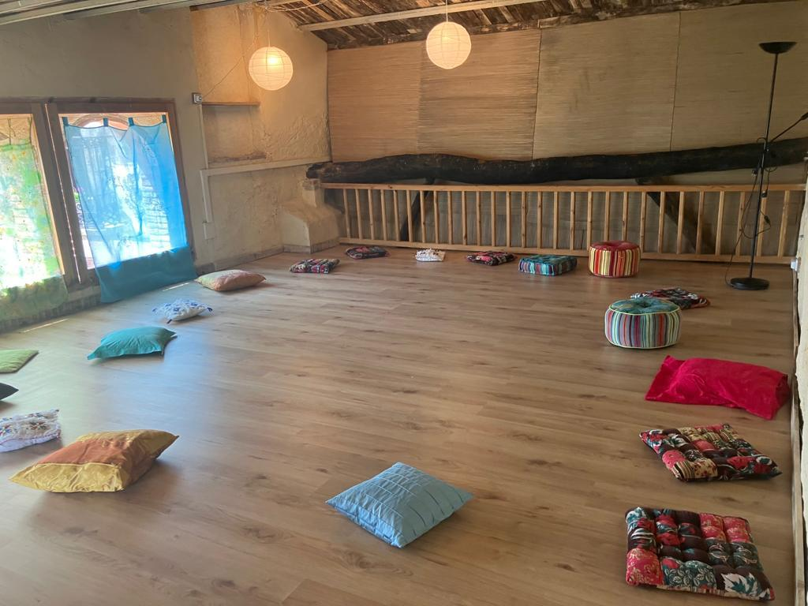
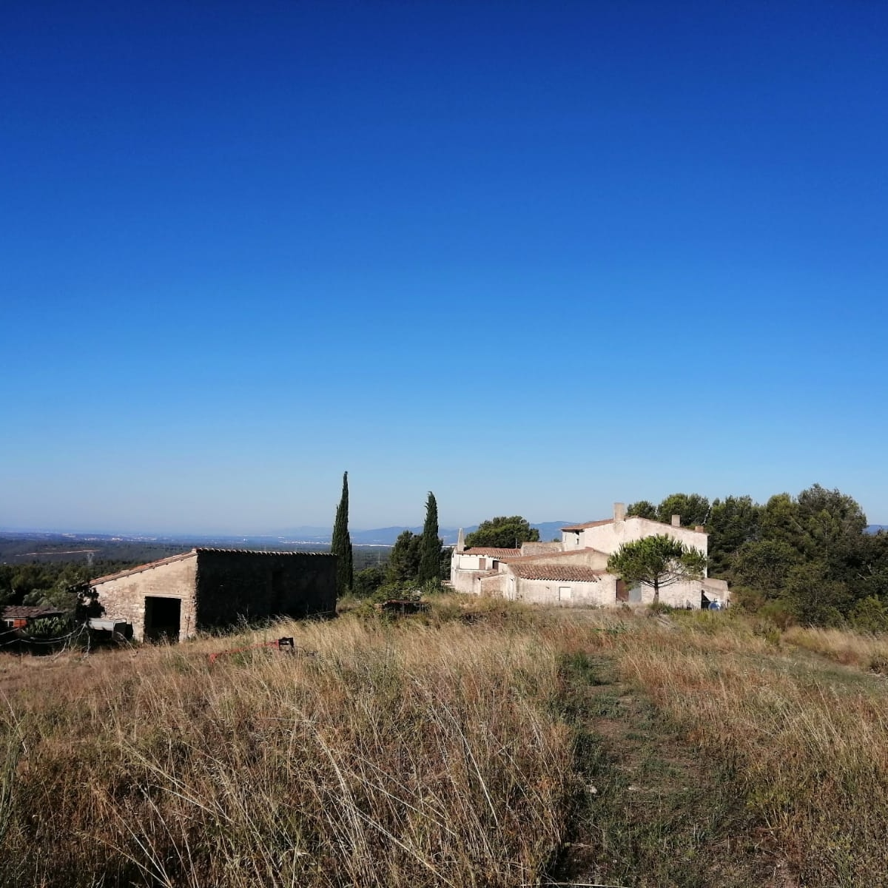

i<!doctype html>
<html lang="en">

<head>
  <meta charset="utf-8">
  <meta name="viewport" content="width=device-width, initial-scale=1, shrink-to-fit=no">
  <title>Brisa Rebes Espi</title>
  <link href="https://cdn.jsdelivr.net/npm/bootstrap@5.3.3/dist/css/bootstrap.min.css" rel="stylesheet"
    integrity="sha384-QWTKZyjpPEjISv5WaRU9OFeRpok6YctnYmDr5pNlyT2bRjXh0JMhjY6hW+ALEwIH" crossorigin="anonymous">
  <link rel="stylesheet" type="text/css" href="index.css">
</head>

<body class="bodycolour">
  <h1>Sentir, després pensar</h1>
  <link rel="stylesheet" href="https://cdn.jsdelivr.net/npm/bootstrap-icons@1.11.3/font/bootstrap-icons.min.css">)
  <i class="bi-alarm"></i><!--point 6-->
  <script src="https://cdn.jsdelivr.net/npm/bootstrap@5.3.3/dist/js/bootstrap.bundle.min.js"
    integrity="sha384-YvpcrYf0tY3lHB60NNkmXc5s9fDVZLESaAA55NDzOxhy9GkcIdslK1eN7N6jIeHz"
    crossorigin="anonymous"></script>
  <div class="container"> <!--point 2-->
    <div class="row">
      <div class="col-md-3">
        L'Altell
        <div class="card" style="width: 18rem;"><!--point 3-->
          
          <div class="card-body">
            <h5 class="card-title">Altell</h5>
            <p class="card-text">Espai de treball corporal</p>
            <a href="https://masferran.cat/espai-gaia-01" class="btn btn-primary">Informació Altell</a>
          </div>
        </div>
      </div>
    </div>
    <div class="col-md-6">
      <div id="ArtiNaturaindicadors" class="carousel slide"><!--point 4-->
        <div class="carousel-indicators">
          <button type="button" data-bs-target="#ArtiNaturaindicadors" data-bs-slide-to="0" class="active"
            aria-current="true" aria-label="Slide 1"></button>
          <button type="button" data-bs-target="#ArtiNaturaindicadors" data-bs-slide-to="1"
            aria-label="Slide 2"></button>
        </div>
        <div class="carousel-inner">
          <div class="carousel-item active">
            
          </div>
        </div>
        <div class="carousel-item">
          
        </div>
      </div>
    </div>
  </div>
  <button class="carousel-control-prev" type="button" data-bs-target="#ArtiNaturaindicadors" data-bs-slide="prev">
    <span class="carousel-control-prev-icon" aria-hidden="true"></span>
    <span class="visually-hidden">Previous</span>
  </button>
  <button class="carousel-control-next" type="button" data-bs-target="#ArtiNaturaindicadors" data-bs-slide="next">
    <span class="carousel-control-next-icon" aria-hidden="true"></span>
    <span class="visually-hidden">Next</span>
  </button>
  </div>
  <div class="col-md-3">
    Entrada
    
    <button type="button" class="btn">Base class</button>
  </div>
  </div>
  <button class="btn btn-primary">Welcome!</button><!--point 5-->

</body>

</html>
